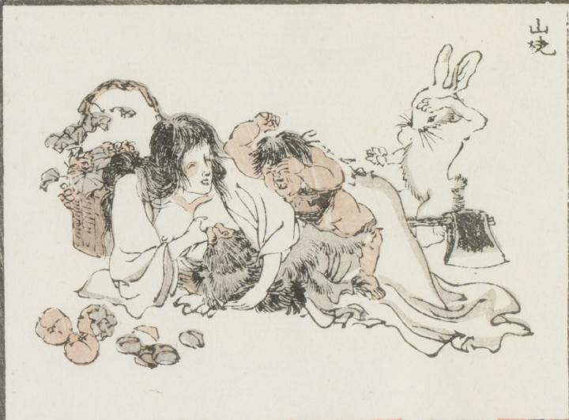

山姥；ヤマンバ，金太郎；キンタロウ，猿；サル，兎；ウサギ

着物の前を肌蹴て横になった山姥の乳房に猿が吸い付いている。赤い肌をして「金」と書かれた腹掛けをした子供が、泣きながら猿に怒るかのように手を上げている。その3者の様子を、兎が後ろから眺めている。
著作者：牧墨僊／出典：親書誌：U426_nichibunken_0097：滑稽洒落狂画苑；コッケイシャレキョウガエン／日付：2007／資源識別子：U426_nichibunken_0097_0014_0000
Copyright (c)2010- International Research Center for Japanese Studies, Kyoto, Japan. All rights reserved.